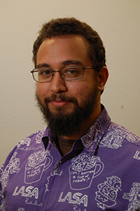

Riad Nassar
Experience Designer
Bio
Some People Like to compete. I like to Cooperate.
-Riad Nassar
Howdy!
I'm a UX Designer in beautiful Austin, TX and recent ACC graduate. I love helping people out and making the World a better place for everyone.
I have a Bachelor's in Psychology with a minor in Computer Science from Austin College and an Associate's in User Experience Design from Austin Community College. In 2015, I was a NATURAL programming intern at the office of the Texas Comptroller of Public Accounts where I learned how to program a main frame to process taxes and documents. After that I was a Customer Success Representative at Xerox and then Conduent after they split off. There I triaged with the software engineering team, project managers, business analysts and the clients to resolve issues, answer complex questions and help configure the product to our clients needs.
When I'm not busy designing, I judge robotics competitions in Central Texas.
Experience
Customer Success Representative | Consilience Software / Conduent
December 2015 - October 2017
- Client Research and Insights
- Documenting, Testing and Training Clients
- Mentoring and Hiring
- Resolving client experience issues
- Work in cross-functional team to achieve deliverables
Natural Programmer Intern | Texas Comptroller of Public Accounts
May 2015 - November 2015
- Write, Test, and Support code to collect and allocate revenue
- Resolve user technical issues
- Gather Functional Requirements from business side
Technician (Theatre Work-Study) | Austin College
September 2010 - May 2014
- Mentor and Trained new members
- Assist and advise designers, directors, a with productions andprojects
Volunteering
Coach / Mentor | LASA Robotics
September 2014 - May 2017
- Manage development of robot during entire development cycle
- Teach basic design principles
- Manage $10,000 budget over a 7 month period every year
- Manage and Train new programming students
Skills and Tools
Skills
- User Centered Design
- Prototyping
- Mentoring
- Project Management
- Conflict Resolution
- Written and Oral
- Communication
- Time Management
- Concept Sketching
Tools
- Illusrtator
- Invision
- HTML/CSS
- Sublime
- JIRA
- Trello
- Github
- Confluence
- Subversion
- Photoshop
Education
Austin Community College | Austin, Texas - May 2019
A.A.S. User Experience Design
Austin College | Sherman, Texas - May 2013
B.A. Psychology w/ Minor in Computer Science